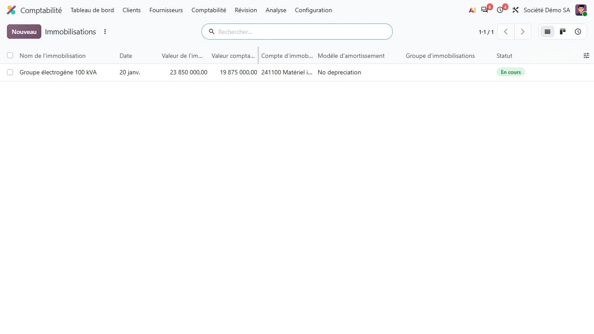
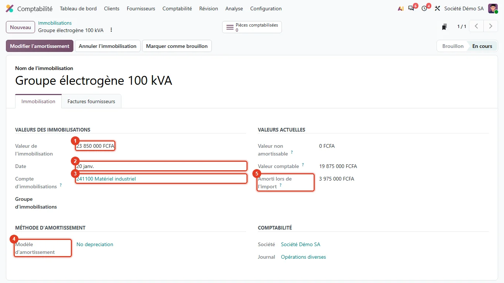

Créer une immobilisation
Objectif. Créer la fiche d'une immobilisation achetée pour qu'Odoo calcule ses amortissements.
Menu Odoo 15Comptabilité > Comptabilité > Immobilisations
Étapes
- Cliquez sur Nouveau (ou créez-la depuis la ligne de la facture fournisseur).
- Saisissez le nom, la valeur (1) et la date d'acquisition (2).
- Vérifiez le compte d'immobilisation (3) et choisissez le modèle d'amortissement (4) : durée, méthode et comptes se remplissent.
- Pour une immobilisation reprise d'un autre logiciel, saisissez le montant déjà amorti (5).
- Cliquez sur Confirmer : le tableau d'amortissement est calculé.


À vérifier
- Le compte d'immobilisation correspond à la nature du bien (21, 23, 24).
- La date d'acquisition est celle de la facture ou de la mise en service.
À éviter
- N'oubliez pas les acquisitions de l'année : sans fiche, pas de dotation.
Exercice
Créez un groupe électrogène acheté 23 850 000, amorti sur 5 ans.